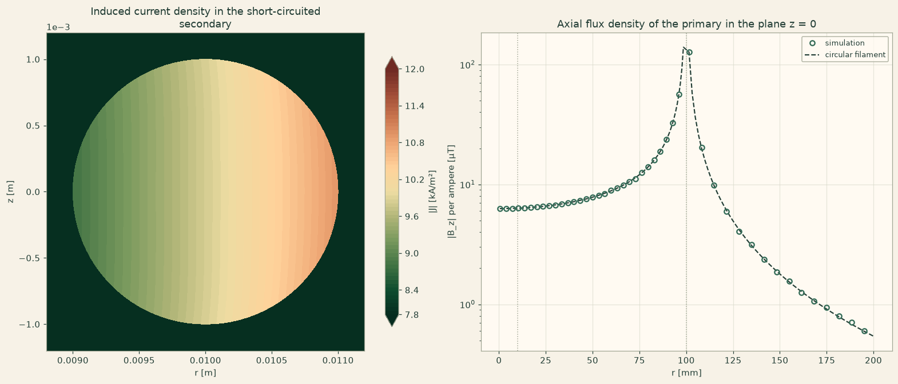
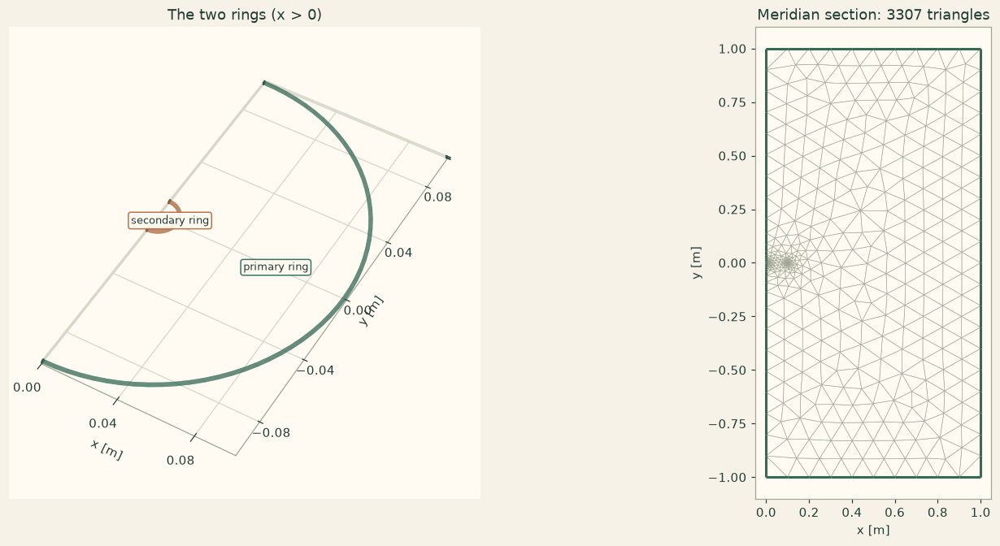

Docs › Examples › Self and mutual inductance of two coplanar rings and the induced current
Eddy currents · 2D-axisymmetric
Self and mutual inductance of two coplanar rings and the induced current
Two concentric copper rings of 100 mm and 10 mm radius lie in one plane; their self-inductances, their mutual inductance and the current induced in the short-circuited inner ring at 1 kHz.

What it computes
OneSimulation reads the rings from STEP files, takes their meridian section and solves the 2D-axisymmetric time-harmonic eddy-current model with quadratic elements on the revolved space: with uniform current density for the static inductances, and with both rings as solid copper conductors, open or short-circuited, for the transfer impedance and the induced current. The script that builds the STEP files comes with the notebook.
What it checks
L1 = 619.65 nH, L2 = 33.14 nH and M = 1.985 nH lie within 0.07, 0.20 and 0.17 % of the ring formula and of Maxwell's formula for coaxial loops; the axial field in the plane of the rings follows the circular filament. With solid copper M = 1.975 - 0.004j nH, the inner ring has R2 = 0.345 mOhm and L2 = 33.02 nH, and short-circuited it carries -15.95 - 26.39j mA per ampere, exactly the current of the two coupled loops.
Geometry
The notebook starts at the import of the CAD files coplanar_rings_inductance_axisymmetric.step, coplanar_rings_inductance_axisymmetric_primary.step, coplanar_rings_inductance_axisymmetric_secondary.step: STEP (AP242), readable by any CAD program, with the names of the faces that the boundary conditions use. Put them next to the notebook.

The geometry script
The script coplanar_rings_inductance_axisymmetric_geometry.py builds the geometry with the CAD objects of OneSimulation and writes the files. Change a dimension there, run it, and run the notebook again.
"""Geometry of the OneSimulation example "Self and mutual inductance of two coplanar rings".
Builds with the CAD objects of OneSimulation a cylinder of air of 1 m radius and 2 m height
around two concentric single-turn copper rings in the plane z = 0: a primary of 100 mm and a
secondary of 10 mm ring radius, both of wire with 1 mm radius. Every part is cut to the side x > 0,
so that its section with the plane y = 0 is the meridian half-plane. Files:
coplanar_rings_inductance_axisymmetric.step (air), coplanar_rings_inductance_axisymmetric_primary.step
and coplanar_rings_inductance_axisymmetric_secondary.step.
"""
from onesim.cad.d3 import Box, Cylinder, Torus
radius, height, wire = 1.0, 2.0, 0.001
side = Box(
length=radius, width=2 * radius, height=height, origin=(0.0, -radius, -height / 2)
)
(Cylinder(radius=radius, length=height, origin=(0.0, 0.0, -height / 2)) & side).save(
"coplanar_rings_inductance_axisymmetric.step"
)
for name, ring in (("primary", 0.1), ("secondary", 0.01)):
(Torus(major_radius=ring, minor_radius=wire) & side).save(
f"coplanar_rings_inductance_axisymmetric_{name}.step"
)The notebook
The complete notebook, cell by cell. Run it to produce the figures and the comparison printout.
A primary ring of radius \(R_1=100\) mm and a secondary ring of \(R_2=10\) mm, both of copper wire with a radius of \(r_0=1\) mm, lie concentrically in the plane \(z=0\). A current \(I_1\) in the primary links a flux with the secondary; its loop voltage \(V_2=j\omega M I_1\) gives the mutual inductance \(M\), the primary's own voltage its self-inductance. Everything is rotationally symmetric, so the meridian half-plane is solved for the azimuthal vector potential \(A_\varphi\):
Three cases are solved at \(f=1\) kHz:
| case | primary | secondary | |---|---|---| | inductances | 1 A, uniform current density (stranded, no eddy currents) | open, uniform current density | | open circuit | 1 A, solid copper | solid copper, no net current | | short circuit | 1 A, solid copper | solid copper, short-circuited ring |
At 1 kHz the skin depth in copper is 2.1 mm, twice the wire radius: the current density in the wires is no longer quite uniform.
| boundary | condition | |---|---| | outer boundary of the air cylinder (1 m radius, 2 m high) | \(A_\varphi=0\) | | axis \(r=0\) | symmetry |
The air and the rings come from the CAD files coplanar_rings_inductance_axisymmetric*.step; the script coplanar_rings_inductance_axisymmetric_geometry.py builds them with the CAD objects of OneSimulation. Each part is cut to \(x>0\), and its section with the plane \(y=0\) is the meridian.
Reference. Maxwell's formula for two coaxial circular filaments (Grover, Inductance Calculations, 1946), \(M=\mu_0\sqrt{R_1R_2}\,[(2/k-k)K(k)-2E(k)/k]\) with \(k^2=4R_1R_2/(R_1+R_2)^2\), which tends to \(\pi\mu_0R_2^2/(2R_1)\) for \(R_2\ll R_1\); the self-inductance of a ring of round wire with uniform current, \(L=\mu_0R\,[\ln(8R/r_0)-7/4]\). A short-circuited secondary carries \(I_2=-Z_{21}I_1/Z_{22}\) with the transfer impedance \(Z_{21}=V_2/I_1\) of the open circuit and its own impedance \(Z_{22}\) (circuit theory of two coupled loops).
import numpy as np
from onesim.cad.exchange import load
from onesim.materials import VacuumPermeability, regionwise
from onesim.meshing import TriangularMesher
from onesim.numerics import Numerics
from onesim.numerics.fem import FiniteElement, Lagrange, RevolvedH1SpaceFactory
from onesim.numerics.linear import ComplexSparseDirect
from onesim.physics.magnetostatics import (
Coil,
EddyCurrents,
MagneticInsulation,
coil_current,
coil_impedance,
coil_voltage,
)
from onesim.simulation import Problem, Simulation
from onesim.visualization import plots, theme
from scipy.special import ellipe, ellipk
theme.set()Geometry and mesh
load returns each part, section its meridian. The wires are embedded as regions with triangles of 0.25 mm; the air grows to 10 cm at the outer boundary.
name = "coplanar_rings_inductance_axisymmetric"
meridian = lambda part: load(f"{name}{part}.step").section((0, 1, 0))
air, primary, secondary = (
meridian(""),
meridian("_primary").named("primary"),
meridian("_secondary").named("secondary"),
)
axis = air.select(
edges=lambda edge: all(abs(point[0]) < 1e-12 for point in edge.points)
)
R1, R2, wire = 0.1, 0.01, 0.001
distance = lambda p: np.minimum(
np.hypot(p[:, 0] - R1, p[:, 1]), np.hypot(p[:, 0] - R2, p[:, 1])
)
mesh = TriangularMesher(
target_size=0.1,
embedded_regions=(primary, secondary),
region_sizes={"primary": 0.00025, "secondary": 0.00025},
size_field=lambda p: np.clip(
0.0004 + 0.5 * np.maximum(distance(p) - wire, 0.0), 0.0004, 0.1
),
).generate(air)
fig = plots.figure(1, 2, size=(14, 6))
plots.geometry(
[
load(f"{name}_{part}.step").named(f"{part} ring")
for part in ("primary", "secondary")
],
camera=plots.Camera(elevation=50, azimuth=-60),
title="The two rings (x > 0)",
ax=fig[0],
)
plots.mesh(
mesh,
groups=("all",),
legend=False,
title=f"Meridian section: {mesh.cell_count} triangles",
ax=fig[1],
)
plots.show()Three eddy-current fields
EddyCurrents at 1 kHz with second-order elements on the revolved space. Coil feeds each ring: stranded coils have a uniform current density, massive ones carry copper whose current distribution follows from the field; a coil fed with the current 0 is an open ring, one fed with the voltage 0 a short-circuited ring.
frequency, sigma, mu0 = 1000.0, 5.8e7, float(VacuumPermeability().evaluate())
omega = 2 * np.pi * frequency
numerics = Numerics(
spatial=FiniteElement(
element=Lagrange(order=2), quadrature_order=4, provider=RevolvedH1SpaceFactory()
),
linear_solver=ComplexSparseDirect(),
)
cases = {
"inductances": (Coil(primary, current=1.0), Coil(secondary, current=0.0), 0.0),
"inductance of the secondary": (
Coil(primary, current=0.0),
Coil(secondary, current=1.0),
0.0,
),
"open circuit": (
Coil(primary, current=1.0, conductor="massive"),
Coil(secondary, current=0.0, conductor="massive"),
sigma,
),
"secondary alone": (
Coil(primary, current=0.0, conductor="massive"),
Coil(secondary, current=1.0, conductor="massive"),
sigma,
),
"short circuit": (
Coil(primary, current=1.0, conductor="massive"),
Coil(secondary, voltage=0.0, conductor="massive"),
sigma,
),
}
solved = {}
for case, (first, second, copper) in cases.items():
model = EddyCurrents(
domain=air.domain(),
permeability=VacuumPermeability(),
frequency=frequency,
coils=(first, second),
conductivity=regionwise(
{"primary": copper, "secondary": copper}, default=0.0, unit="S/m"
),
)
result = Simulation(
problem=Problem(
name=f"Two rings, {case}",
geometry=air,
physics=(model,),
boundary_conditions=(
MagneticInsulation(boundary=air.boundaries.all - axis, physics=model),
),
),
mesh=mesh,
numerics=numerics,
).solve_stationary()
solved[case] = (result, model, first, second)Inductances
\(L_1=\operatorname{Im}Z_{11}/\omega\), \(M=V_2/(j\omega I_1)\) and \(L_2\) with uniform current density, against the formulas.
result, model, first, second = solved["inductances"]
L1 = coil_impedance(result, model, first).imag / omega
M = (coil_voltage(result, model, second) / (1j * omega)).real
result, model, first, second = solved["inductance of the secondary"]
L2 = coil_impedance(result, model, second).imag / omega
k = np.sqrt(4 * R1 * R2 / (R1 + R2) ** 2)
maxwell = mu0 * np.sqrt(R1 * R2) * ((2 / k - k) * ellipk(k**2) - 2 / k * ellipe(k**2))
ring = lambda R: mu0 * R * (np.log(8 * R / wire) - 1.75)
print(
f"{mesh.cell_count} triangles; limit pi mu0 R2^2 / (2 R1) = {1e9 * np.pi * mu0 * R2**2 / (2 * R1):.4f} nH"
)
print("quantity simulation [nH] reference [nH] deviation")
for label, value, reference in (
("L1, primary", L1, ring(R1)),
("L2, secondary", L2, ring(R2)),
("M, Maxwell", M, maxwell),
):
print(
f"{label:16s} {1e9 * value:16.4f} {1e9 * reference:16.4f} {100 * (value / reference - 1):+10.3f} %"
)Solid copper at 1 kHz
The transfer impedance of the open circuit gives the mutual inductance with the eddy currents in the wires; the short-circuited secondary carries the current that the two impedances predict.
result, model, first, second = solved["open circuit"]
Z21 = coil_voltage(result, model, second) / coil_current(result, model, first)
result, model, first, second = solved["secondary alone"]
Z22 = coil_impedance(result, model, second)
result, model, first, second = solved["short circuit"]
I2 = coil_current(result, model, second)
print(
f"open circuit: M = Z21 / (j w) = {1e9 * (Z21 / (1j * omega)).real:.4f} {1e9 * (Z21 / (1j * omega)).imag:+.4f}j nH"
)
print(
f"secondary: R2 = {1e3 * Z22.real:.4f} mOhm (direct current {1e3 * 2 * R2 / (sigma * wire**2):.4f} mOhm), "
f"L2 = {1e9 * Z22.imag / omega:.4f} nH"
)
print(
f"short circuit: I2 = {1e3 * I2.real:.4f} {1e3 * I2.imag:+.4f}j mA; circuit -Z21 I1 / Z22 = "
f"{1e3 * (-Z21 / Z22).real:.4f} {1e3 * (-Z21 / Z22).imag:+.4f}j mA; deviation {100 * abs(I2 + Z21 / Z22) / abs(Z21 / Z22):.3f} %"
)The static inductances follow the formulas, the mutual inductance with copper differs from the static one only in a small imaginary part, the loss of the eddy currents, and the induced current is that of the two coupled loops.
Figure
The current density in the cross-section of the short-circuited secondary, and the axial flux density of the primary along the radius in the plane of the rings.
result, model, first, second = solved["short circuit"]
rho = np.concatenate((np.linspace(0.0005, 0.0985, 120), np.linspace(0.1015, 0.2, 60)))
plane = np.column_stack((rho, np.zeros_like(rho)))
field = solved["inductances"][0].field(solved["inductances"][1].magnetic_flux_density)
loop = lambda r: (
lambda m: mu0
/ (2 * np.pi)
/ (R1 + r)
* (ellipk(m) + (R1**2 - r**2) / (R1 - r) ** 2 * ellipe(m))
)(4 * R1 * r / (R1 + r) ** 2)
fig = plots.figure(1, 2, size=(15, 6))
plots.surface(
result.field(model.current_density),
component=lambda J, position: 1e-3 * np.abs(J[:, 1]),
limits=(8, 12),
contours=9,
subdivisions=3,
xlimits=(R2 - 1.2 * wire, R2 + 1.2 * wire),
ylimits=(-1.2 * wire, 1.2 * wire),
xlabel="r [m]",
ylabel="z [m]",
label="|J| [kA/m²]",
title="Induced current density in the short-circuited secondary",
ax=fig[0],
)
plots.line(
points={
"simulation": (1e3 * rho[::4], 1e6 * np.abs(field.evaluate(plane[::4])[:, 2]))
},
reference={"circular filament": (1e3 * rho, 1e6 * np.abs(loop(rho)))},
scale="logy",
vlines=[1e3 * R2, 1e3 * R1],
xlabel="r [mm]",
ylabel="|B_z| per ampere [µT]",
title="Axial flux density of the primary in the plane z = 0",
ax=fig[1],
)
plots.show()Going further
Raise the frequency until the skin depth is a fraction of the wire radius and watch the resistance of the secondary grow, or move the secondary along the axis in coplanar_rings_inductance_axisymmetric_geometry.py and compare \(M\) with Maxwell's formula at that distance.